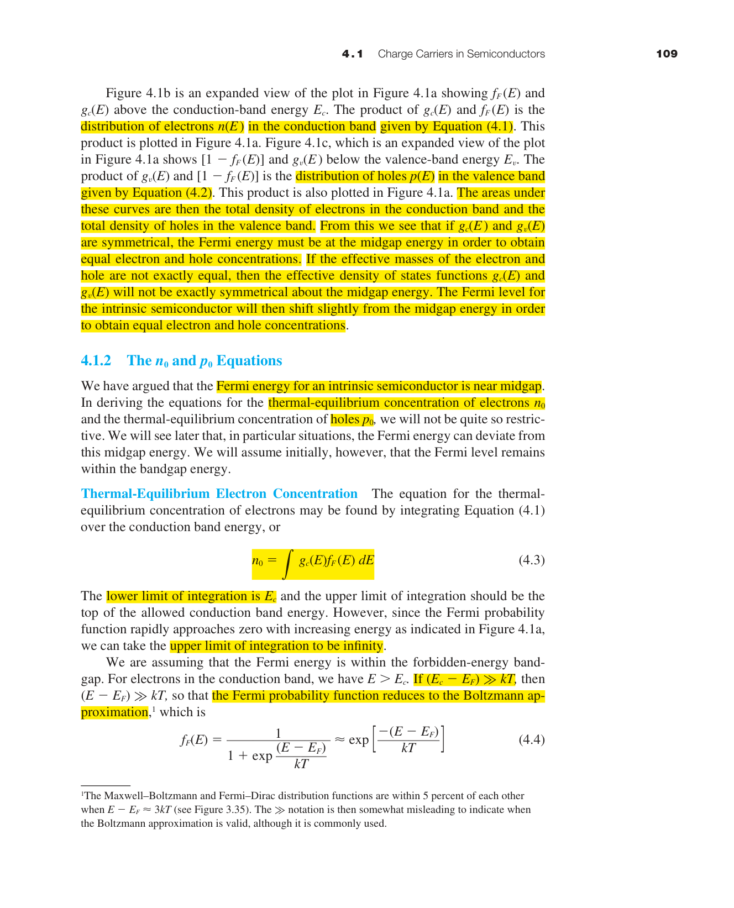
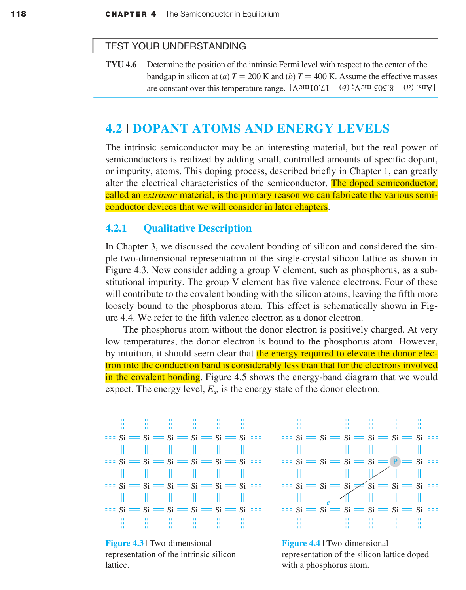
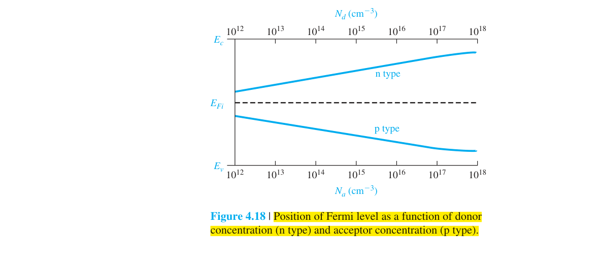
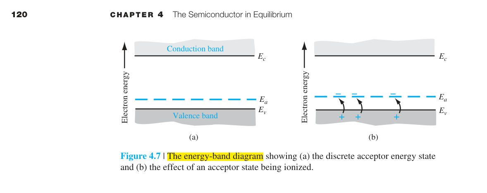
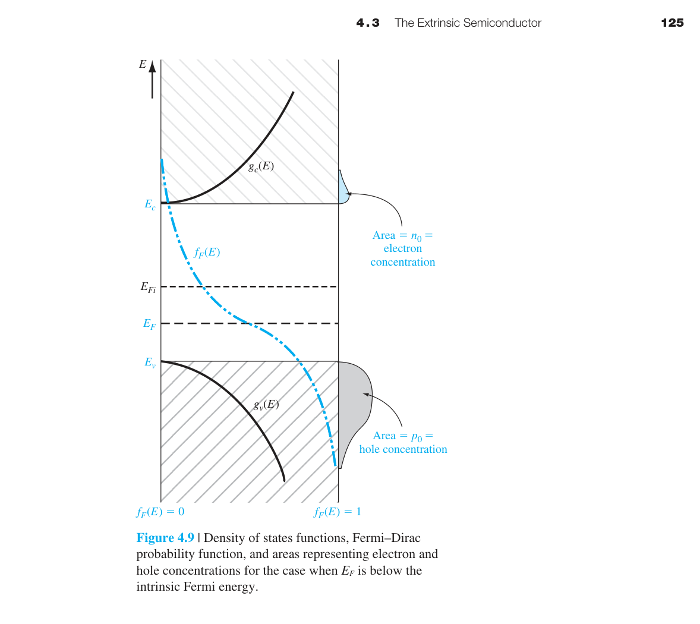

平衡態半導體
4.0 本章預覽
前面三章建立了量子力學和固態理論的基礎：我們學會了薛丁格方程、能帶理論、態密度、以及 Fermi-Dirac 統計。現在我們終於要把這些工具全部組裝起來，回答半導體元件物理中最核心的問題：
在熱平衡下，半導體中有多少電子？有多少電洞？Fermi 能階在哪裡？
這三個問題的答案是所有半導體元件分析的起點。無論你要設計一個 pn 接面、一個 MOSFET、還是一個太陽能電池，第一步永遠是計算熱平衡載子濃度。
本章的邏輯鏈非常清晰：態密度 × Fermi 機率 → 積分 → $n_0$ 和 $p_0$ → $n_i$ → 質量作用定律 → 加入摻雜 → 電荷中性 → 解出 Fermi 能階位置。每一步都建立在前一步的基礎上。
關鍵概念
- 載子濃度：$n_0,p_0$ 由態密度與 Fermi 機率積分得到。
- 質量作用定律：$n_0 p_0=n_i^2$ 在熱平衡下恆成立。
- 摻雜能階：施體/受體改變多數載子類型與 $E_F$ 位置。
- 電荷中性：$n_0+N_a^-=p_0+N_d^+$ 聯立解出載子濃度。
- 溫度區間：凍結區、非本徵區、本徵區決定 $n_0(T)$ 行為。
🧭 本章推理地圖
- 已知條件能帶參數、溫度與摻雜濃度給定材料統計起點（§4.1–§4.3）
- 中間機制Fermi 能階位置與電荷中性聯立決定 $n_0,p_0$（§4.4–§4.6）
- 平衡結果本徵/外質半導體的載子濃度與 $E_F$ 隨溫度變化（§4.6）
- 工程用途作為 pn 接面、電流與所有元件分析的第一步（Ch5–Ch8）

4.1.1 平衡態電子與電洞的分布
在第三章中我們得到了兩個關鍵函數：態密度 $g_c(E)$（導帶中每單位能量、每單位體積有多少個「空位」可以給電子坐），以及 Fermi-Dirac 機率 $f_F(E)$（能量為 $E$ 的量子態被電子佔據的機率）。
要知道導帶中某個能量 $E$ 處的電子濃度，就是把這兩個函數相乘：
物理圖像（圖 4.1）：態密度 $g_c(E)$ 從 $E_c$ 開始以 $\sqrt{E-E_c}$ 的形式增長——能量越高，可用的量子態越多。但 Fermi-Dirac 機率 $f_F(E)$ 隨能量指數衰減——能量越高的態越難被佔據（因為電子傾向待在低能態）。兩者相乘的結果是一個先升後降的鐘形曲線：在 $E_c$ 附近，$g_c$ 還很小；在遠高於 $E_c$ 處，$f_F$ 已衰減到幾乎為零。電子主要分布在導帶底部往上約 $kT$（室溫約 0.026 eV）的範圍內。

將 $n(E)$ 從 $E_c$ 積分到 $\infty$，就得到導帶中的總電子濃度 $n_0$。對於電洞，同理：價帶態密度 $g_v(E)$ 乘以「沒有電子的機率」$[1-f_F(E)]$，積分得到 $p_0$。
📝 自編概念例
$n(E)=g_c(E)f_F(E)$ 鐘形峰在 $E_c$ 上方約 $kT$ 處。
4.1.2 $n_0$ 與 $p_0$ 的公式推導
對於非簡併半導體（即 $E_F$ 位於能隙中，且距 $E_c$ 和 $E_v$ 都超過 $3kT$），$E_c - E_F \gg kT$，因此 $f_F(E) \approx \exp[-(E-E_F)/kT]$——這就是 Boltzmann 近似。這個近似使積分可以解析求解，得到本章最重要的兩個公式：
其中 $N_c$ 和 $N_v$ 分別是導帶和價帶的有效態密度（effective density of states）：
$N_c$ 和 $N_v$ 隨溫度以 $T^{3/2}$ 增加。直觀理解：溫度越高，電子的熱能越大，能夠「看到」越高能量的量子態，等效態密度因此增大。
公式 (4.11) 的直觀理解：$n_0$ =（等效態密度）×（Boltzmann 機率因子）。$N_c$ 告訴我們導帶底部有多少「座位」；$\exp[-(E_c-E_F)/kT]$ 告訴我們這些座位被佔據的機率。$E_c - E_F$ 越大（Fermi 能階離導帶越遠），機率越小→電子越少。這完全類似化學反應中的 Arrhenius 公式。
📐 例題 4.1 — 計算 $n_0$
Si 在 $T=300$ K，$E_c-E_F=0.25$ eV。$N_c=2.8\times10^{19}$ cm⁻³。
$n_0 = 2.8\times10^{19} \cdot e^{-0.25/0.0259} = 2.8\times10^{19} \cdot e^{-9.65} = 1.8\times10^{15}$ cm⁻³。
注意：$E_c-E_F$ 僅 0.25 eV，但 $n_0$ 比 $N_c$ 小了四個數量級——這是因為 Boltzmann 因子指數衰減的威力。
4.1.3 本徵載子濃度 $n_i$
本徵半導體（intrinsic semiconductor）是指完全沒有雜質的完美晶體。在本徵半導體中，每一個被激發到導帶的電子，都在價帶中留下一個電洞，因此 $n_0 = p_0 \equiv n_i$。
將 $n_0 p_0$ 相乘，$E_F$ 被消去（注意 $n_0$ 含 $e^{+E_F/kT}$，$p_0$ 含 $e^{-E_F/kT}$），得到一個與 $E_F$ 無關、僅取決於材料和溫度的常數：
這就是赫赫有名的質量作用定律（mass action law）。它的物理意義是：在熱平衡下，$n_0$ 和 $p_0$ 的乘積是一個常數。如果你用摻雜提高 $n_0$（n 型），$p_0$ 必定以 $n_i^2/n_0$ 的比例下降。這就像化學平衡中的 $K_{eq}$——你可以改變反應物濃度，但平衡常數不變。

| 材料 | $E_g$ (eV) | $n_i$ at 300K (cm⁻³) | 直觀理解 |
|---|---|---|---|
| Ge | 0.66 | $2.4\times10^{13}$ | 能隙最小→最多本徵載子 |
| Si | 1.12 | $1.5\times10^{10}$ | 能隙適中 |
| GaAs | 1.42 | $1.8\times10^{6}$ | 能隙最大→本徵載子極少（少了 4 個數量級！） |
$n_i$ 是判斷材料是否仍受摻雜控制的基準線：當 $n_i$ 接近淨摻雜濃度時，材料開始表現得像本徵半導體。
📐 例題 4.3 — $n_i$ 的溫度效應
Si 在 $T=300$ K：$n_i=1.5\times10^{10}$ cm⁻³。若 $T=400$ K：
$N_c \propto T^{3/2}$ → $N_c(400)/N_c(300)=(400/300)^{3/2}=1.54$
$e^{-E_g/2kT}$ 從 $e^{-21.6}$ 變為 $e^{-16.2}$ → 增加了 $e^{5.4}\approx 220$ 倍
故 $n_i(400\text{K}) \approx 1.54 \times 220 \times 1.5\times10^{10} \approx 5\times10^{12}$ cm⁻³
溫度僅升 100°C，$n_i$ 增加了 300 倍！這就是為什麼半導體元件對溫度極其敏感。
4.1.4 本徵 Fermi 能階 $E_{Fi}$
在本徵半導體中，令 $n_0 = p_0 = n_i$ 代入 (4.11) 和 (4.19)，可解得本徵 Fermi 能階的位置：
$E_{Fi}$ 非常接近能隙中央（midgap）。對 Si，$m_p^* > m_n^*$，修正項為負（約 −0.013 eV），所以 $E_{Fi}$ 略低於正中央。
有了 $n_i$ 和 $E_{Fi}$ 作為基準，我們可以把 $n_0$ 和 $p_0$ 改寫成極其實用的形式——不再需要知道 $N_c$ 和 $N_v$ 的具體數值：
$E_F > E_{Fi}$ → $n_0 > n_i > p_0$ → n 型（多數載子為電子）
$E_F < E_{Fi}$ → $p_0 > n_i > n_0$ → p 型（多數載子為電洞）
$E_F$ 每遠離 $E_{Fi}$ 一個 $kT$（約 0.026 eV），多數載子濃度就增加 $e$ 倍（約 2.72 倍）。
此後外質半導體分析多以 $E_{Fi}$ 為基準判斷 n/p 型與載子濃度量級。
📝 自編概念例
$E_F-E_{Fi}=+kT$ → $n_0\approx e\cdot n_i$；$-kT$ → $p_0\approx e\cdot n_i$。
4.2 摻雜原子與能階
純淨的本徵半導體導電性很差——Si 的 $n_i$ 只有 $10^{10}$ cm⁻³，而 Si 的原子密度是 $5\times10^{22}$ cm⁻³，也就是說每 $5\times10^{12}$ 個原子中才有一個自由電子。要靠本徵載子做元件是完全不現實的。
摻雜（doping）是半導體技術的基石：刻意加入極少量的特定雜質原子，精確控制導電性。典型的摻雜濃度是 $10^{14}$–$10^{18}$ cm⁻³——相比 Si 原子密度仍然極低（約百萬分之一到百分之一），但已經比 $n_i$ 高出 4 到 8 個數量級。

施體（Donor）— n 型摻雜
用第 V 族元素（P、As、Sb）取代 Si 原子。V 族元素有 5 個價電子。其中 4 個與相鄰 Si 形成共價鍵；第 5 個電子多餘出來，只被施體離子微弱束縛。這個多餘電子的束縛能（游離能）極小——對 Si 中的 P 僅約 0.045 eV。室溫下 $kT\approx0.026$ eV，熱能足以使絕大部分施體電子脫離束縛進入導帶，成為自由電子。施體離子本身固定在晶格中，帶正電。
受體（Acceptor）— p 型摻雜
用第 III 族元素（B、Al、Ga）取代 Si。III 族元素只有 3 個價電子，與相鄰 Si 形成共價鍵時缺少一個電子。這個空缺可以被鄰近 Si-Si 鍵中的電子填補——相當於從價帶中「接受」一個電子，在價帶中留下一個電洞。受體能階距價帶頂部也僅約 0.045 eV，室溫下幾乎全部游離。
| 雜質 | 族別 | 類型 | Si 中能階位置 | 束縛能 (eV) |
|---|---|---|---|---|
| P（磷） | V | 施體 | $E_c - 0.045$ eV | 0.045 |
| As（砷） | V | 施體 | $E_c - 0.054$ eV | 0.054 |
| Sb（銻） | V | 施體 | $E_c - 0.039$ eV | 0.039 |
| B（硼） | III | 受體 | $E_v + 0.045$ eV | 0.045 |
📝 自編概念例
完全游離：$N_d^+\approx N_d$ 是 Ch4.5 電荷中性求解的前提。
4.2.1 定性描述
施體（V 族）多一個價電子，弱束縛後室溫游離成導帶電子，材料呈 n 型。受體（III 族）少一個價電子，從價帶接受電子留下電洞，材料呈 p 型。
摻雜濃度典型 $10^{14}$–$10^{18}$ cm⁻³，比本徵 $n_i$ 高 4–8 個數量級，因此可精確控制導電性。
能帶圖上施體能階 $E_d$ 靠近 $E_c$，受體 $E_a$ 靠近 $E_v$；淺能階是室溫完全游離的關鍵。
這是後續外質半導體、pn 接面與電晶體摻雜設計的語言基礎。
📝 自編概念例 — 判斷 n/p 型
Si 掺 P → 施體 → n 型；掺 B → 受體 → p 型。
4.2.2 游離能
施體/受體游離能約 0.045 eV（Si），遠小於氫原子束縛能，因介電常數屏蔽與有效質量修正。
室溫 $kT\approx0.026$ eV 與游離能同量級 → 完全游離：$N_d^+\approx N_d$、$N_a^-\approx N_a$。
深能階雜質不易游離，常成為復合中心而非有效摻雜。
功率與太空低溫應用必須檢查是否進入凍結區。
📐 例題 — 游離能與 $kT$ 比較
$E_d=0.045$ eV、$kT=0.026$ eV → $E_d/kT\approx1.7$，室溫下游離率很高。
4.2.3 III–V 半導體中的摻雜
III–V 材料（如 GaAs）由兩套子晶格組成，摻雜原子佔據 III 或 V 位會決定施體/受體角色。
某些元素（如 Si 在 GaAs）可為雙性摻雜（amphoteric），位置不同電性不同。
化合物半導體的高遷移率器件依賴精準的 n/p 型控制與低補償。
能帶模型給方向，成長與退火條件決定最終電性。
📝 自編概念例
GaAs 中 Si 占 Ga 位→施體；占 As 位→受體。
4.3 外質半導體
加入摻雜後的半導體稱為外質半導體（extrinsic semiconductor）。摻雜濃度記為 $N_d$（施體濃度）和 $N_a$（受體濃度）。
外質半導體的三個溫度區域：
① 凍結區（Freeze-out）：極低溫（ $T < 50$ K）。$kT$ 遠小於雜質束縛能（0.045 eV）→大部分雜質未游離→$n_0$ 隨 $T$ 急劇上升（$\propto e^{-E_d/2kT}$）。載子濃度遠低於 $N_d$。
② 外質區（Extrinsic）：室溫附近（$50 < T < 500$ K）。$kT$ 足以完全游離所有雜質→$n_0 \approx N_d$（n 型）。同時 $n_i$ 仍然很小→$n_0$ 基本不隨溫度變化。這是半導體元件的正常操作區域。
③ 本徵區（Intrinsic）：高溫（$T > 500$ K）。$n_i(T)$ 指數增長→$n_i \gg N_d$→本徵載子濃度遠超過摻雜提供的載子→$n_0 \approx n_i$。此時摻雜失去意義——材料表現得像本徵半導體。
為什麼這三個區域很重要？① 凍結區：低溫電子元件（如太空探測器）必須考慮載子載子凍結。② 外質區：所有正常操作的半導體元件都在此區域。③ 本徵區：功率元件在高溫下可能進入本徵區→漏電流急劇增大→元件失效。
外質半導體的一個重要參數區分是簡併（degenerate）與非簡併（nondegenerate）：
- 非簡併：$E_F$ 在能隙中，距能帶邊緣 $> 3kT$。Boltzmann 近似有效。大多數實際元件都在此範圍。
- 簡併：摻雜濃度極高（$>10^{19}$ cm⁻³），$E_F$ 進入導帶或價帶。必須使用完整的 Fermi-Dirac 積分。簡併半導體的行為更接近金屬。

📝 自編概念例
300 K Si 外質區：$n_0\approx N_d$ 且 $n_i$ 可忽略。
4.3.1 平衡分布
外質半導體中多數載子由摻雜決定：n 型 $E_F$ 靠近 $E_c$，p 型靠近 $E_v$。
外質區（室溫）常近似 $n_0\approx N_d$ 或 $p_0\approx N_a$，少數載子由 $n_i^2/n_0$ 給出。
多數/少數載子概念是二極體、BJT 與 MOS 分析的基礎語言。
判斷材料電性時，先看 $E_F$ 相對 $E_{Fi}$ 的位置。
📐 例題 — n 型少數載子
$N_d=10^{16}$ cm⁻³ → $n_0\approx10^{16}$，$p_0\approx n_i^2/N_d\approx2\times10^4$ cm⁻³。
4.3.2 n₀p₀ 乘積
熱平衡下質量作用定律 $n_0 p_0 = n_i^2$ 對本徵與外質材料皆成立（Boltzmann 區）。
提高多數載子必然壓低少數載子；這是 $p_0=n_i^2/n_0$ 的物理根源。
少數載子雖濃度小，卻主導二極體正向電流、BJT 增益與光電響應。
由多數載子濃度可立即估算少數載子背景，無需重算統計積分。
📐 例題 4.7 概念
$n_0=10^{16}$ → $p_0=(1.5\times10^{10})^2/10^{16}=2.25\times10^4$ cm⁻³。
4.3.4 簡併與非簡併半導體
非簡併：$E_F$ 在能隙內且距能帶邊 $>3kT$，Pauli 阻塞可忽略，Boltzmann 有效。
簡併：$E_F$ 進入能帶，載子濃度高，統計行為接近金屬。
室溫一般器件多在非簡併區；功率與先進 CMOS 源漏常觸及簡併。
選用公式前先問：Fermi 能階離能帶邊多遠？
📝 自編概念例
室溫 $3kT\approx0.08$ eV；$E_F$ 在能隙中央以下 0.2 eV 通常仍非簡併。
4.3.3 Fermi–Dirac 積分
當 $E_F$ 接近或進入能帶，Boltzmann 近似失效，載子濃度需用 Fermi–Dirac 積分 $F_{1/2}$ 表示。
非簡併時 $F_{1/2}(x)\approx e^x$，回到 $n_0=N_c e^{-(E_c-E_F)/kT}$。
簡併材料遷移率下降、能隙窄化，模擬中常與 F-D 積分一起處理。
入門計算多用 Boltzmann；知道極限何時失效更重要。
📝 自編概念例
$E_c-E_F=2kT$ 時 Boltzmann 仍大致可用；$
4.4 施體與受體的統計
嚴格來說，並非所有雜質原子都一定游離——這取決於溫度和 Fermi 能階的位置。游離施體濃度的精確表達式為：
其中 $g_d = 2$ 是施體基態的簡併度（電子可以自旋向上或向下佔據施體能階）。當 $E_F$ 遠低於 $E_d$ 時（n 型半導體的典型情況），分母中的指數項很小 → $N_d^+ \approx N_d$——這就是完全游離。
對受體同理：
$g_a = 4$（價帶頂部的雙重簡併 + 自旋簡併）。當 $E_F$ 遠高於 $E_a$ 時（p 型的典型情況）→ 完全游離。
凍結溫度的定量估算
什麼溫度下，一半的施體已經游離？令 $N_d^+ = N_d/2$，代入 (4.53)：$1 + 2\exp[(E_F-E_d)/kT] = 2$→$\exp[(E_F-E_d)/kT] = 0.5$→$E_d - E_F = kT\ln 2 \approx 0.69 kT$。對 Si 中的 P（$E_d = E_c - 0.045$ eV）：若 $E_F \approx E_c - 0.02$ eV（半游離時的近似），則 $0.025 \approx 0.69 kT$→$T \approx 0.025/(0.69\times8.617\times10^{-5}) \approx 420$ K。但實際上因為 $E_F$ 本身隨溫度變化，凍結開始的溫度更低（∼50–100 K）。
工程意義：在太空應用中（衛星電子元件），環境溫度可低至 −55°C（218 K）——仍在外質區。但在深空探測器的陰影面，溫度可降至 < 30 K——必須使用特殊設計（如更高的摻雜濃度或不同的材料）來避免載子凍結。
📐 例題概念
$g_d=2$、$g_a=4$ 來自自旋與價帶簡併。
4.4.1 機率函數
游離施體濃度：
游離受體濃度：
$g_d=2$、$g_a=4$ 為簡併因子。n 型典型 $E_F\ll E_d$ → $N_d^+\approx N_d$。
摻雜統計與載子統計耦合，共同決定 $E_F$。
低溫或深能階時必須保留 $N_d^+$、$N_a^-$ 的完整形式。
📐 例題 — 半游離條件
$N_d^+=N_d/2$ 時 $\exp[(E_F-E_d)/kT]=1/(2g_d)$，即 Fermi 能階接近 $E_d$。
4.4.2 完全游離與凍結
室溫淺摻雜：完全游離近似 $N_d^+\approx N_d$、$N_a^-\approx N_a$，大幅簡化電荷中性。
凍結區：$kT\ll E_d$，雜質未游離，$n_0\propto e^{-E_d/2kT}$ 隨溫度急升。
外質區是 MOSFET、二極體等器件的設計工作點。
高溫本徵區使摻雜失效，是功率器件熱失控風險之一。
📝 自編概念例
218 K 衛星環境通常仍在外質區；30 K 陰影面需特別設計。
4.5 電荷中性——完整推導
熱平衡下，半導體晶體整體必須保持電中性——淨電荷密度為零。這個看似簡單的條件，是聯繫摻雜濃度和載子濃度的關鍵橋樑。本節將從電荷中性條件出發，完整推導出補償半導體的載子濃度解析解，並分析其溫度依賴性。
4.5.1 補償半導體的概念
補償半導體（compensated semiconductor）是指同一區域中同時含有施體和受體雜質原子的半導體。這在半導體製程中極為常見——例如在 n 型基板上擴散受體雜質以形成 pn 接面時，擴散區就是一個補償區域。補償半導體可以是 n 型（$N_d > N_a$）、p 型（$N_a > N_d$），或完全補償（$N_d = N_a$，表現得像本徵半導體）。
補償的物理圖像：施體原子「捐出」電子，受體原子「接受」電子。當兩者同時存在時，施體電子會優先落入能量更低的受體能階（$E_a$ 在 $E_v$ 附近，而 $E_d$ 在 $E_c$ 附近——電子從高能的 $E_d$ 落入低能的 $E_a$ 在能量上是有利的）。每有一個電子從施體轉移到受體，就相當於一對施體-受體互相「抵消」——淨效應是有效摻雜濃度變為 $|N_d - N_a|$。
4.5.2 電荷中性條件的嚴格表達
半導體中的電荷來自四個來源，如圖 4.14 所示：
- 負電荷：導帶中的電子 $n_0$（每個帶 $-q$）+ 游離受體離子 $N_a^-$（接受了電子，帶負電）
- 正電荷：價帶中的電洞 $p_0$（每個帶 $+q$）+ 游離施體離子 $N_d^+$（捐出了電子，帶正電）
電中性要求總負電荷等於總正電荷：
更精確地，引入未游離雜質的濃度 $n_d$（仍在施體能階上的電子濃度）和 $p_a$（仍在受體能階上的電洞濃度），則 $N_d^+ = N_d - n_d$、$N_a^- = N_a - p_a$：
4.5.3 完全游離近似下的解析解
在室溫附近，雜質的束縛能（~0.045 eV）與 $kT$（0.026 eV）同數量級，絕大多數雜質都已游離——這就是完全游離近似（$n_d \approx 0$、$p_a \approx 0$、$N_d^+ \approx N_d$、$N_a^- \approx N_a$）。在此近似下，電荷中性簡化為：
4.5.4 二次方程的完整推導
現在將質量作用定律 $n_0 p_0 = n_i^2$ 與電荷中性 (4.58) 結合。從 (4.58) 解出 $p_0$：
代入 $n_0 p_0 = n_i^2$：
展開得到 $n_0$ 的二次方程：
使用二次公式求解（取正根，因為 $n_0$ 必須為正），得到本章最重要的通用公式：
這個公式是補償半導體載子濃度的精確解（在完全游離近似下）。它統一了三種情況：
① n 型主導（$N_d \gg N_a$ 且 $N_d - N_a \gg n_i$）：根號內 $((N_d-N_a)/2)^2 \gg n_i^2$，因此 $n_0 \approx (N_d-N_a)/2 + (N_d-N_a)/2 = N_d - N_a \approx N_d$。多數載子濃度等於淨施體濃度。
② p 型主導（$N_a \gg N_d$ 且 $N_a - N_d \gg n_i$）：對稱地，$p_0$ 滿足：
且 $p_0 \approx N_a - N_d \approx N_a$。
③ 高度補償（$N_d \approx N_a$ 即 $|N_d - N_a| \ll n_i$）：$N_d - N_a \approx 0$，因此 $n_0 \approx \sqrt{n_i^2} = n_i$。此時儘管有大量雜質原子，半導體表現得像本徵材料——所有施體電子都被受體捕獲，淨自由載子僅來自本徵激發。
對 p 型半導體（$N_a > N_d$），少數載子電子濃度由質量作用定律決定：
4.5.5 載子濃度的溫度依賴性——三個區域
公式 (4.60) 中的 $n_i$ 是溫度的強函數（$n_i \propto T^{3/2} e^{-E_g/2kT}$），而 $N_d$、$N_a$ 在完全游離區基本不隨溫度變化。這導致載子濃度隨溫度呈現特徵性的三個區域（如圖 4.16），以 Si 中摻磷 $N_d = 5\times10^{14}$ cm⁻³ 為例：
① 凍結區（Freeze-out， $T < 50$ K）：$kT$ 遠小於雜質束縛能（P 在 Si 中為 0.045 eV）。大部分施體電子仍被束縛在 $E_d$ 能階上——完全游離近似在此失效。$n_0$ 隨溫度以 $e^{-E_d/2kT}$ 急劇上升。此時 $n_0 \ll N_d$，半導體實際上幾乎不導電。在太空低溫環境中（如深空探測器的陰影面可達 < 30 K），載子凍結是嚴重的工程問題。
② 外質區 / 飽和區（Extrinsic / Saturation，$50 < T < 500$ K）：$kT$ 足以完全游離雜質（$N_d^+ \approx N_d$），同時 $n_i$ 仍然遠小於 $N_d$。因此 $n_0 \approx N_d$——載子濃度基本不隨溫度變化，呈現一個「平台」。這是所有正常操作的半導體元件所在區域。室溫（300 K）恰好位於此區域中央。
- Si:P, $N_d=10^{15}$ cm⁻³：外質區從 ~30 K 延伸到 ~550 K
- Si:P, $N_d=10^{17}$ cm⁻³：外質區從 ~50 K 延伸到 ~600 K（更高摻雜→更寬的外質平台）
③ 本徵區（Intrinsic，$T > 500$ K）：$n_i$ 以指數形式增長，最終超過 $N_d$。此時 $((N_d-N_a)/2)^2 \ll n_i^2$，因此 $n_0 \approx n_i$——半導體失去其外質特性，回歸本徵行為。摻雜濃度越低，過渡到本徵區的溫度越低。例如：
- $N_d=10^{14}$ cm⁻³ → 約 450 K 進入本徵區
- $N_d=10^{15}$ cm⁻³ → 約 550 K 進入本徵區（Si 的 $n_i$ 在 ~550 K 達到 $10^{15}$ cm⁻³）
- $N_d=10^{17}$ cm⁻³ → 約 650 K 才進入本徵區
工程意義：功率元件（如 IGBT、功率 MOSFET）在大電流操作時，接面溫度可達 400–500 K。如果設計不當（摻雜濃度過低），元件可能在高溫時進入本徵區→漏電流急劇增大→熱失控→元件燒毀。這就是為什麼功率元件通常使用較高的摻雜濃度。
| 溫度區域 | $T$ 範圍（Si:P） | 主導機制 | $n_0$ 行為 | 完全游離？ |
|---|---|---|---|---|
| 凍結區 | $< 50$ K | 雜質游離 | $n_0 \propto e^{-E_d/2kT}$ | 否 |
| 外質區 | $50-500$ K | 雜質完全游離 | $n_0 \approx N_d$（常數） | 是 ✓ |
| 本徵區 | $> 500$ K | 本徵激發 | $n_0 \approx n_i \propto e^{-E_g/2kT}$ | 是 |
📐 例題 4.9 — 補償半導體的載子濃度計算
Si，$T=300$ K，$N_d=5\times10^{15}$ cm⁻³，$N_a=2\times10^{15}$ cm⁻³。
代入 (4.60)：$n_0 = \frac{3\times10^{15}}{2} + \sqrt{\left(\frac{3\times10^{15}}{2}\right)^2 + (1.5\times10^{10})^2}$
$= 1.5\times10^{15} + \sqrt{2.25\times10^{30} + 2.25\times10^{20}}$
$= 1.5\times10^{15} + 1.5\times10^{15} = 3.0\times10^{15}$ cm⁻³
$p_0 = n_i^2 / n_0 = 2.25\times10^{20} / 3.0\times10^{15} = 7.5\times10^4$ cm⁻³
注意：$N_d - N_a = 3\times10^{15} \gg n_i = 1.5\times10^{10}$，因此 $n_0 \approx N_d - N_a$——淨施體濃度決定了多數載子濃度。受體「吃掉」了 $2\times10^{15}$ cm⁻³ 的施體電子。
📐 例題 4.10 — 低摻雜 Ge 的補償效應
Ge，$T=300$ K，$N_d=2\times10^{14}$ cm⁻³，$N_a=0$。$n_i$(Ge) $=2.4\times10^{13}$ cm⁻³。
$n_0 = \frac{2\times10^{14}}{2} + \sqrt{\left(\frac{2\times10^{14}}{2}\right)^2 + (2.4\times10^{13})^2}$
$= 1\times10^{14} + \sqrt{1\times10^{28} + 5.76\times10^{26}}$
$= 1\times10^{14} + 1.028\times10^{14} = 2.028\times10^{14}$ cm⁻³
如果簡單地取 $n_0 \approx N_d = 2\times10^{14}$，誤差僅 1.4%——但這是因為 $N_d \gg n_i$。若 $N_d$ 更接近 $n_i$（例如 Ge 中 $N_d=5\times10^{13}$），簡單近似就會產生顯著誤差。
4.5.1 補償半導體
同時含 $N_d$ 與 $N_a$ 時，施體電子優先填入受體能階，淨摻雜為 $|N_d-N_a|$。
高度補償（$N_d\approx N_a$）時雖有大量雜質，$n_0\approx n_i$，表現如本徵材料。
不能只用 $N_d-N_a$ 代替二次方程解，除非 $|N_d-N_a|\gg n_i$。
補償會把 $E_F$ 拉向能隙中央，改變電阻率與接面特性。
📐 例題 4.9 概念
$N_d=5\times10^{15}$、$N_a=2\times10^{15}$ → 淨施體 $3\times10^{15}$ 決定 $n_0$。
4.5.2 平衡電子與電洞濃度
電荷中性（完全游離）：$n_0+N_a=p_0+N_d$，結合 $n_0p_0=n_i^2$ 得
$N_d-N_a\gg n_i$ 時 $n_0\approx N_d-N_a$；高度補償時 $n_0\approx n_i$。
少數載子：$p_0=n_i^2/n_0$（n 型主導時）。
此方程是 Ch5–Ch8 載子濃度與 $V_{bi}$ 計算的輸入。
📐 例題 — n 型 Si
$N_d=10^{16}$、$n_i=1.5\times10^{10}$ → $n_0\approx10^{16}$ cm⁻³，$p_0\approx2\times10^4$ cm⁻³。
4.6 Fermi 能階的位置

有了 $n_0$（從摻雜濃度得知）和 $n_i$（從材料參數得知），就可以反推 Fermi 能階的位置。這是本章的收尾——把前面所有的推導串在一起：
物理圖像：Fermi 能階是系統的「電化學勢」。當你加入施體雜質（給予電子），系統的化學勢上升→ $E_F$ 向 $E_c$ 移動。加入受體（拿走電子），化學勢下降→ $E_F$ 向 $E_v$ 移動。摻雜濃度每增加 10 倍，$E_F$ 移動約 $kT\ln10 \approx 0.06$ eV（室溫）。

📐 例題 4.12 — n 型 Si 的 $E_F$ 位置
Si，$N_d=10^{16}$ cm⁻³，$T=300$ K。
$E_F - E_{Fi} = 0.0259 \cdot \ln(10^{16}/1.5\times10^{10}) = 0.0259 \cdot 13.4 = 0.347$ eV
$E_{Fi}$ 約在能隙中央下方 0.013 eV → $E_c - E_F \approx 1.12/2 + 0.013 - 0.347 \approx 0.21$ eV。
Fermi 能階距導帶底部僅 0.21 eV——摻雜有效地把 $E_F$ 從能隙中央「拉」向了導帶。
溫度對 Fermi 能階的影響
圖 4.7 的一個重要特徵是：高溫時所有曲線都趨近 $E_{Fi}$。這是因為當溫度升高，$n_i$ 急劇增加（$\propto e^{-E_g/2kT}$）。當 $n_i$ 超過 $N_d$（或 $N_a$）時，本徵載子主導，半導體回歸本徵行為——$E_F \to E_{Fi}$。對 $N_d=10^{14}$ cm⁻³ 的 Si，這大約發生在 500 K 左右。

式 (4.73) 把載子濃度、本徵參數與能帶圖連成一條線：先由 §4.5 求 $n_0$，再代入對數關係定 $E_F$，即可畫出與摻雜、溫度一致的平衡能帶示意。
4.6.1 數學推導
由 $n_0=n_i\exp[(E_F-E_{Fi})/kT]$ 得
或由 $n_0=N_c\exp[-(E_c-E_F)/kT]$ 得 $E_c-E_F=kT\ln(N_c/n_0)$。
$E_F>E_{Fi}$ → n 型；$E_F 反解 $E_F$ 是從摻雜濃度畫能帶圖的標準步驟。 $n_0/N_d=10^{16}$、$n_i=1.5\times10^{10}$ → $E_F-E_{Fi}=0.0259\ln(6.7\times10^5)\approx0.35$ eV。📐 例題 4.12 片段
4.6.2 摻雜與溫度變化
低溫：$E_F$ 靠近摻雜能階（凍結/外質過渡）。室溫：$E_F$ 隨淨摻雜移向能帶邊。
高溫：$n_i\gg N_d$ 時 $E_F\to E_{Fi}$，材料回歸本徵行為。
$N_d=10^{14}$ cm⁻³ 的 Si 約在 500 K 附近 $E_F$ 開始明顯回歸中央。
溫度依賴是漏電與熱穩定性分析的出發點。
📝 自編概念例
同一 $N_d$，溫度加倍可能使 $n_i$ 增數百倍，改變 $E_F$ 位置。
4.6.3 Fermi 能階的意義
$E_F$ 是電子系統的電化學勢：平衡時全材料共用同一 $E_F$，無淨粒子流。
非平衡時改用準 Fermi 能階 $E_{Fn}$、$E_{Fp}$ 分別描述電子與電洞（Ch6）。
金半接觸、pn 接面內建電位都與 $E_F$ 空間分布相關。
掌握 $E_F$ 語言後，Ch7 能帶彎曲與 Ch8 I–V 邊界條件會更直覺。
📝 自編概念例
平衡 pn 接面：單一水平 $E_F$；反偏：$E_{Fn}-E_{Fp}=eV_R$。
🧪 互動模型：費米能階與平衡載子濃度
展開互動模型收合互動模型調整溫度、摻雜濃度與材料，即時觀察 EF 與載子濃度的變化
本章摘要
- 載子濃度公式：$n_0 = N_c e^{-(E_c-E_F)/kT}$，$p_0 = N_v e^{-(E_F-E_v)/kT}$。核心在於 Boltzmann 近似——適用於非簡併半導體。
- 有效態密度 $N_c$, $N_v$：將複雜的能帶態密度簡化為等效能階的態密度，隨 $T^{3/2}$ 增加。Si 室溫：$N_c=2.8\times10^{19}$ cm⁻³。
- 質量作用定律 $n_0 p_0 = n_i^2$：熱平衡下的不變量——提高一種載子濃度必然壓低另一種。這是統計力學的結果，與摻雜無關。
- $n_i$ 隨溫度指數增長：$n_i = \sqrt{N_c N_v} e^{-E_g/2kT}$。Si 從 300K 到 400K，$n_i$ 增加約 300 倍。
- 本徵 Fermi 能階 $E_{Fi}$：幾乎在能隙正中央，是判斷 n/p 型的基準。 $E_F > E_{Fi}$ → n 型， $E_F < E_{Fi}$ → p 型。
- 摻雜：V 族（P, As）→ n 型；III 族（B）→ p 型。室溫下完全游離（束縛能 ∼0.045 eV vs $kT$ ∼0.026 eV）。
- 電荷中性：$n_0 + N_a^- = p_0 + N_d^+$。結合 $n_0 p_0 = n_i^2$ 可解出任何摻雜情況下的 $n_0$ 和 $p_0$。
- Fermi 能階位置：$E_F - E_{Fi} = kT\ln(n_0/n_i)$。摻雜使 $E_F$ 移動——n 型向 $E_c$，p 型向 $E_v$。高溫時 $E_F$ 回歸 $E_{Fi}$。
常見誤解與修正
熱平衡半導體 的公式都來自特定物理假設；請先確認適用條件，再代入數字。
電場、電流、濃度梯度與載子流方向常不同，建議先畫圖再判斷正負號。
低階注入、空乏近似、非簡併與一維模型都不是永遠成立。
自我檢核
我能不能用一句話說出本章主軸？
本章主軸是把前面章節的材料物理量放進 熱平衡半導體 的具體問題中。
我能不能列出本章最重要的近似？
請確認你能指出每個公式背後的平衡、空乏、低階注入或非簡併條件。
我能不能用圖解釋主要公式？
若能畫出能帶、電場、濃度或電荷分布，公式通常就不會變成死背。
延伸學習與下一步
建議把本章公式整理成「物理意義、適用條件、常見錯誤」三欄表。
若要銜接下一章，請特別注意本章中作為邊界條件或材料參數的量。
完成後可回到習題頁，用一題數值題檢查量級是否合理。
推導、假設與章末診斷
方程式使用契約
- 熱平衡要求溫度均勻、無外部注入且 Fermi 能階在空間中為常數。
- $n=N_c e^{-(E_c-E_F)/kT}$ 與 $p=N_v e^{-(E_F-E_v)/kT}$ 使用 Maxwell–Boltzmann 近似，通常要求能階距帶邊至少約 $3kT$；退化摻雜須用 Fermi–Dirac 積分。
- $n\approx N_D$ 或 $p\approx N_A$ 還要求完全游離、單一摻雜型占優且非本徵。
- 電荷中性邊界為整體 $ \rho=0$；局部空乏區則不能套用多數載子等於摻雜的近似。
中間推導：質量作用律
- $n=N_c e^{-(E_c-E_F)/kT}$，$p=N_v e^{-(E_F-E_v)/kT}$。
- 相乘後 $E_F$ 消去：$np=N_cN_v e^{-(E_c-E_v)/kT}$。
- 定義 $n_i^2=N_cN_v e^{-E_g/kT}$，故平衡態 $n_0p_0=n_i^2$。
- 再與 $p+N_D^+=n+N_A^-$ 聯立，才可求補償或未完全游離情況。
章末練習與概念診斷
$N_D=10^{16}$ cm$^{-3}$ 是否永遠代表 $n=10^{16}$ cm$^{-3}$？
否。低溫可能凍結、很高溫可能進入本徵區、補償受體會降低淨電子濃度，重摻雜還可能退化。
非平衡光照下仍可用單一 $E_F$ 嗎？
通常不行；需分別使用電子與電洞準 Fermi 能階，且 $np$ 不再固定等於 $n_i^2$。
延伸計算練習
完成上方診斷後，請在不查公式的情況下重建代表推導，並改變一個參數檢查極限行為。更多含數值與解答的題目：本章完整習題頁。